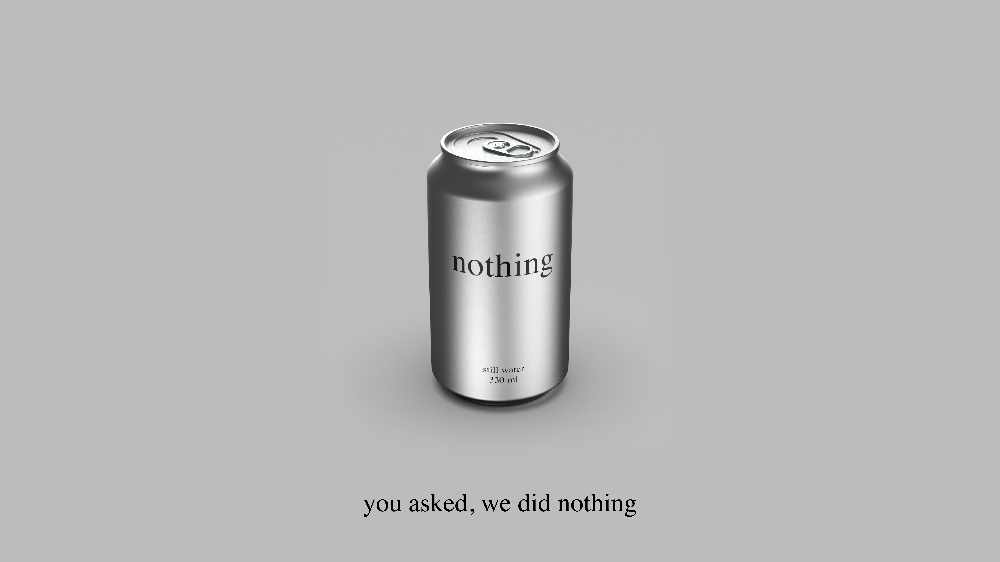
Still water. Nothing added. Nothing claimed. A concept brand study in radical restraint.
Every line in the nothing campaign already exists in the language. "Thanks for nothing." "Feels like nothing." "Nothing can stop you." "Take nothing for granted." nothing didn't write them. It made them accurate.
This is a rare position for a brand to find. The name enters conversations it didn't start. It carries associations, lightness, absence, honesty, without the brand having to claim any of them. The word does the work that most brands pay copywriters, media buyers, and influencers to do.
A product name that doubles as a common idiom means the brand is already present in the culture before the first can is opened. "Nothing comes easy." True. "It's probably nothing." Also true. "You asked, we did nothing." The literal answer to what was put in the water.
The linguistic system is the strategy. Every review is technically correct. The brand can say things other brands cannot say without lying. Not because it has better claims, but because it has none. Every statement nothing makes is a statement about absence. Absence cannot be disputed.
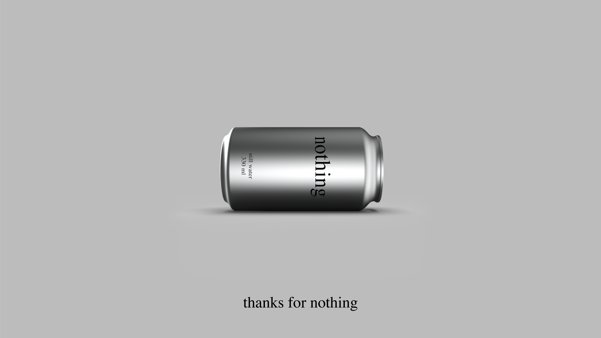
The logotype is the word "nothing" set in Times New Roman. Lowercase. No modification. No custom letterforms, no kerning adjustments, no proprietary cut. The most available version of a very available typeface, used exactly as it was intended to be used.
Lowercase because it is not a command and not a shout. It is a statement. Lowercase is how you write a word when it is just a word and not trying to be anything else.
The logo communicates restraint before the reader processes the word itself. No symbol, no mark, no brandmark geometry. The identity is typographic and nothing else. When the brand says nothing, the logo proves it.
Printed in black on raw aluminium, it reads as a label. On an off-white background it reads as a word. In both contexts it reads as honest. That consistency, the same thing in different contexts still being the same thing, is what a strong mark does. This one does it with a font everyone already owns.
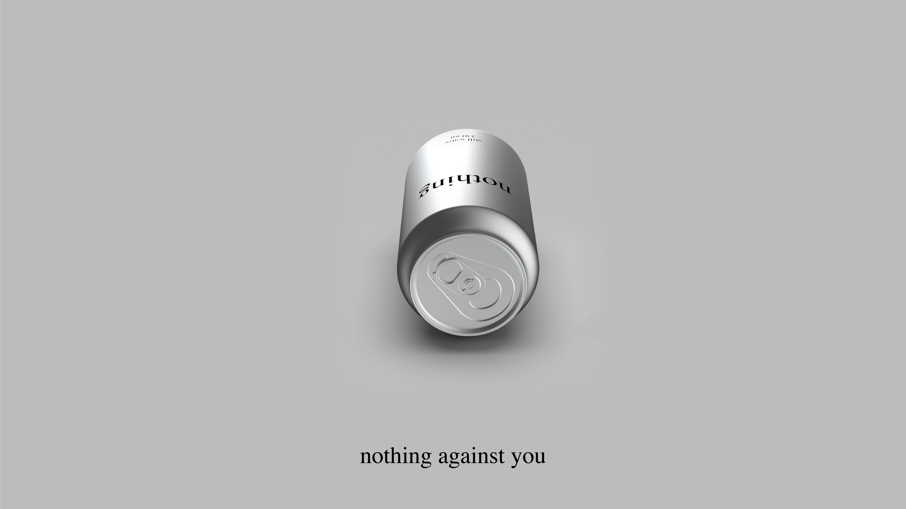
Two colours were already there: black and aluminium. Two were added to make the page readable. None of them are ours.
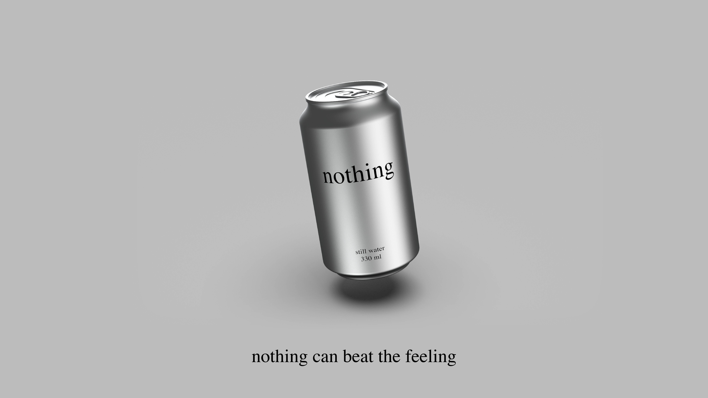
Times New Roman was designed in 1931 by Stanley Morison for The Times of London. Its purpose was to carry news, to be legible at small sizes on cheap paper, to disappear into text rather than draw attention to itself. It became the default typeface of legal documents, academic papers, government forms, and Microsoft Word. It is the most used serif in the world and, because of that, almost invisible.
A typeface that tries not to be noticed is the right typeface for a brand that tries not to be a brand. Times New Roman on an aluminium can is exactly the wrong choice by conventional brand logic, no character, no distinctiveness, no visual interest. Which is why it is exactly right.
When a familiar thing appears in an unfamiliar context, it stops being familiar. Times New Roman on a water can produces a small cognitive event: the reader recognises the typeface, does not recognise the context, and pauses. That pause is the brand's moment.
The typeface is also free. It ships with every computer sold. It requires no license, no designer, no version control. A brand that can be reproduced by anyone with a word processor is, in a specific sense, impossible to counterfeit, because the original is indistinguishable from a copy, and that is the whole point.
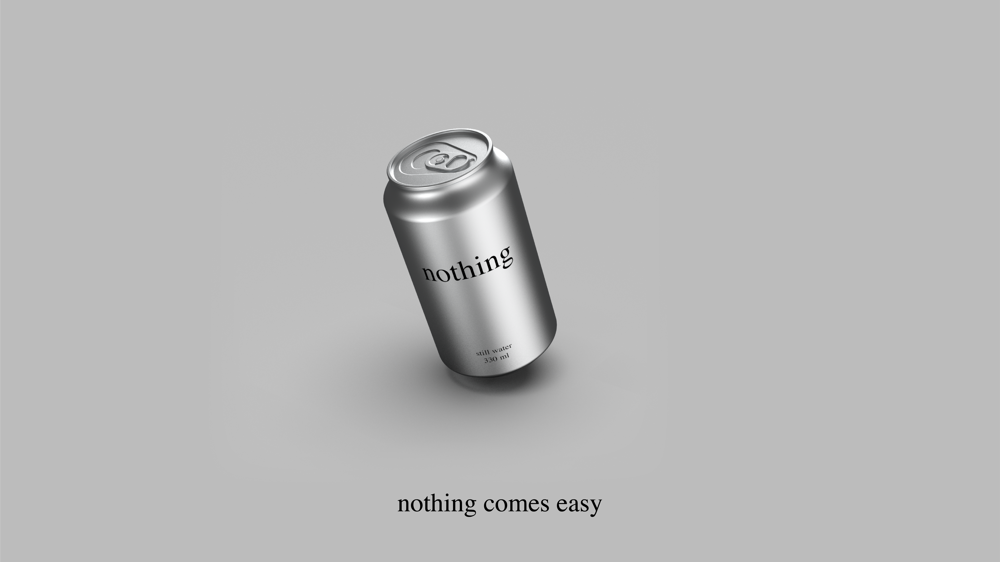
The premium still water category organises around two axes: how much the brand claims (from performance and enhancement to radical absence) and how the brand sounds (from loud and irreverent to minimal and quiet). The position nothing occupies, absent of claim and genuinely quiet, is where no other brand has chosen to stand.
nothing is not quieter than VOSS. It is structurally different. VOSS performs quietness. nothing does not perform. The distinction is what makes the quadrant empty, every other brand, however minimal, is still making a claim about itself.
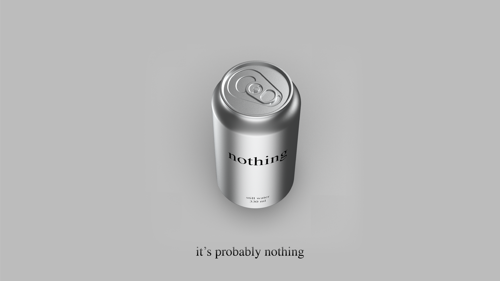
The sober-curious movement is growing at 92% event attendance year-on-year. 22% of 18–35 year olds actively avoid alcohol, not for health reasons but for social and identity reasons. They need a drink that signals sophistication without performing wellness. A can that says nothing is not trying to be their drink. It just is one.
Anti-brand sentiment among Gen Z is the highest recorded. The same generation that made "de-influencing" a content category and declined to engage with brands that tried too hard. nothing is a brand that never had to announce itself. It is the brand that never needed to start.
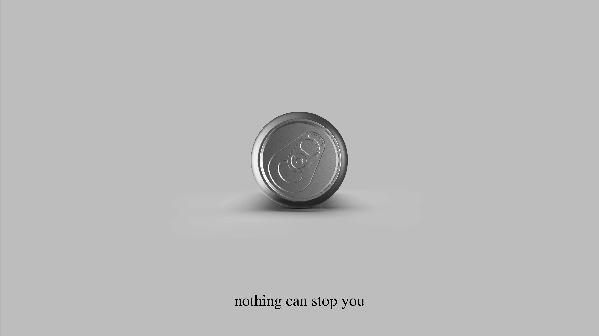
For adults in the US premium still water category who distrust the language of wellness and are fatigued by brands that perform values at them, nothing is the only water brand that makes no claim. Where every competitor reaches for provenance, purity, or purpose, nothing reaches for the shelf and puts the product down. The positioning is not a gap waiting to be filled. It is a refusal to fill gaps.
The brand does not compete on taste, source, mineral content, or environmental commitment. It competes on the absence of competition. In a category that has learned to dress water in the language of aspiration, nothing wears the can.
Positioning statement: The water for people tired of being told what water should feel like.
The statement is not a tagline. It is the operating logic of every brand decision, packaging, copy, distribution, pricing, and silence. If a decision requires a claim, it is not a nothing decision. The brand's single constraint is also its single strength: it cannot contradict itself, because it says nothing to contradict.
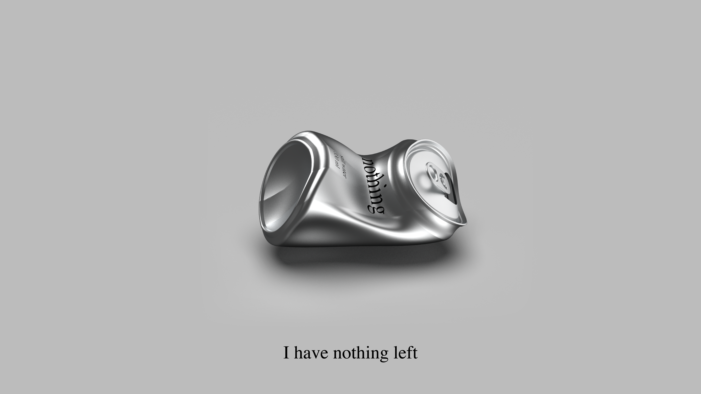
Nothing earns trust by making no claim on it. This is the central idea, not a slogan arrived at by a creative team, but the logical conclusion of building a brand on absence. Trust that is not solicited cannot be refused. A brand that does not ask to be believed cannot be disbelieved.
The core is not anti-marketing. It is a recognition that marketing, at its limit, becomes noise, and that noise is what the consumer is leaving. nothing is not the brand that stopped marketing. It is the brand that understood where marketing ends and the product begins, and drew the line there.
Every element of the brand resolves to the same answer: Times New Roman because it is already there. Aluminium because it is already there. Still water because it is already there. The brand did not choose these things. It declined to replace them.
The brand core is not a value. It is a practice. Nothing is what happens when a brand holds its position long enough for the absence to become a presence.
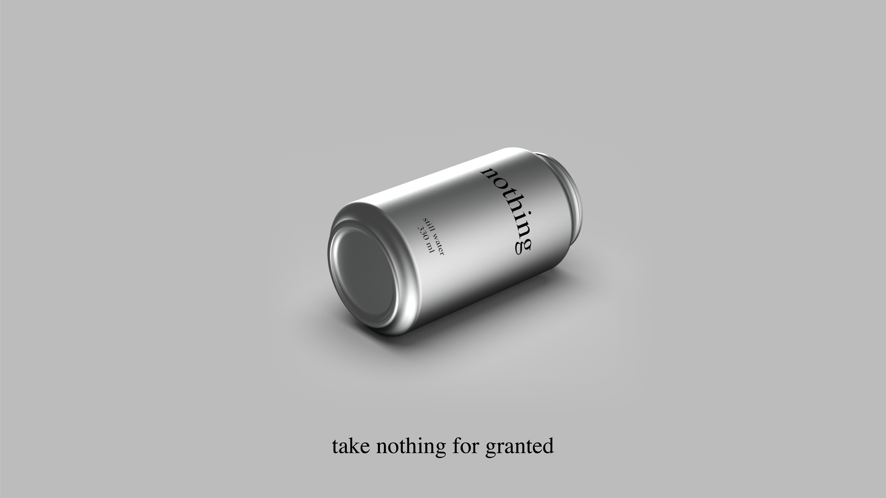
Nothing delivers exactly what it says. This is the promise, and it is the only promise a brand built on absence can make without breaking itself. The consumer opens the can and gets still water. The label tells them what is inside. The can does not tell them how to feel about it.
The promise is not modest. It is precise. In a category where the space between the product and its description has grown wide enough to hold an entire marketing industry, nothing closes that space to zero. What is in the can is what is on the can. That is all.
For the consumer, the promise resolves as relief. The decision to pick up a nothing is not a statement about who they are or what they value. It is a decision to drink water. The brand gives them permission to make that decision without it meaning anything beyond itself.
Nothing asks for nothing in return. Not loyalty signalled through repurchase, not identity expressed through brand affiliation, not advocacy performed on social media. The consumer who buys nothing once and never again has kept the brand's promise as fully as one who buys it every day.
The answer to the bartender. The brand in real life.
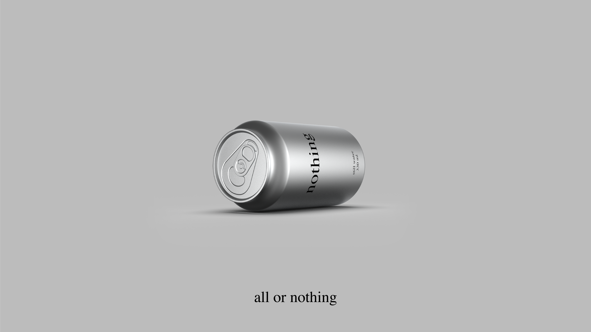
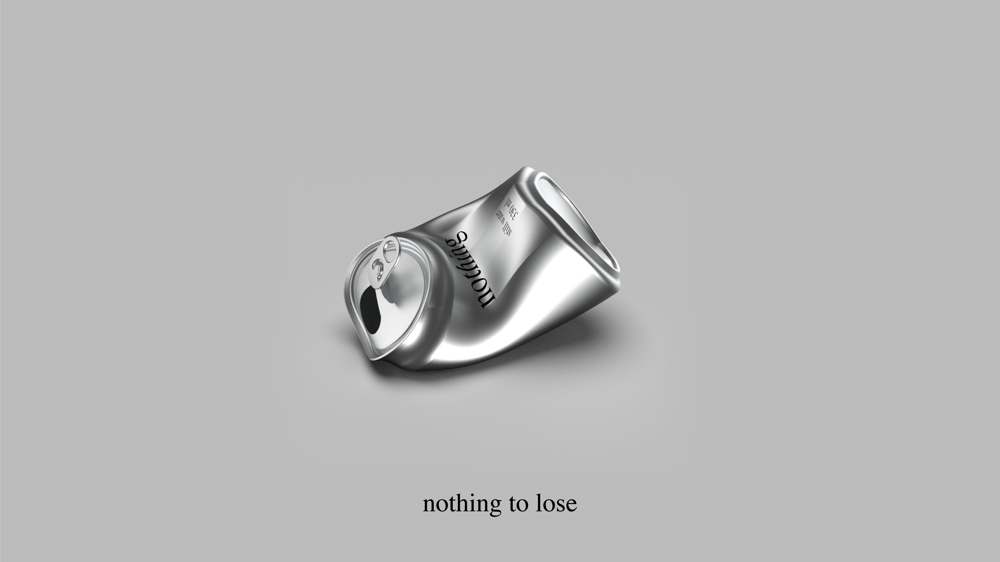
This is a concept brand study. The strategy, identity, campaign system, and market positioning were developed independently by KOQEMUS as a demonstration of what a brand built on absence can look like when the absence is deliberate all the way down.
If you have a project that you think is too quiet, too honest, or too small to be interesting, I would like to hear it.
Get in touch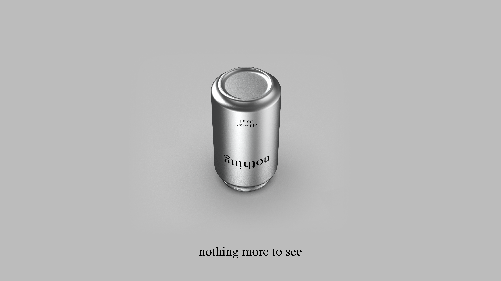
Note: Nothing Technology Limited (est. 2020, London) is a consumer electronics company producing smartphones and audio products under the "Nothing" name. This study concerns a hypothetical still water brand using the same word in an unrelated category. The overlap is intentional as a point of analysis, not oversight.
KOQEMUS is a creative and strategic studio. Return to KOQEMUS.